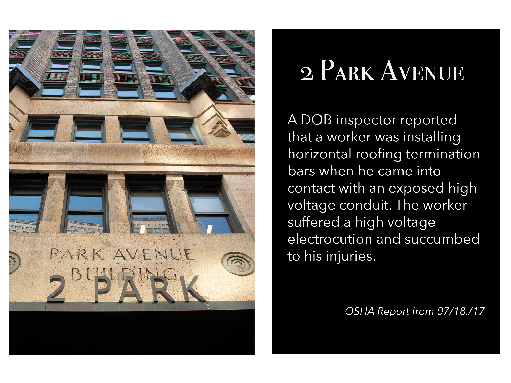
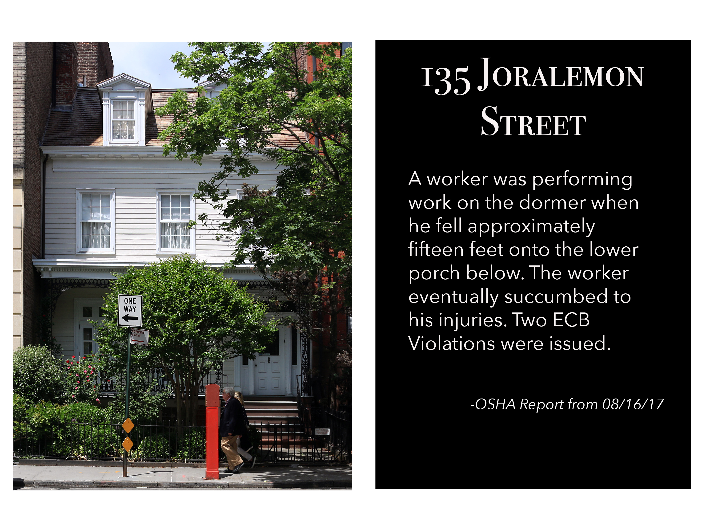
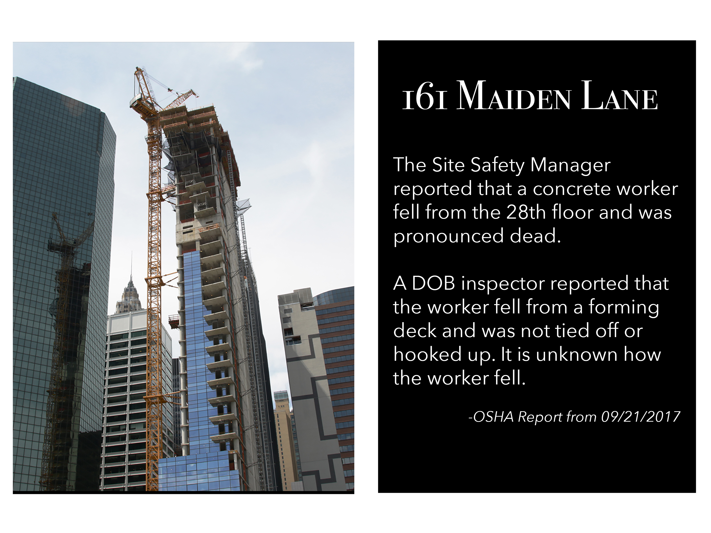
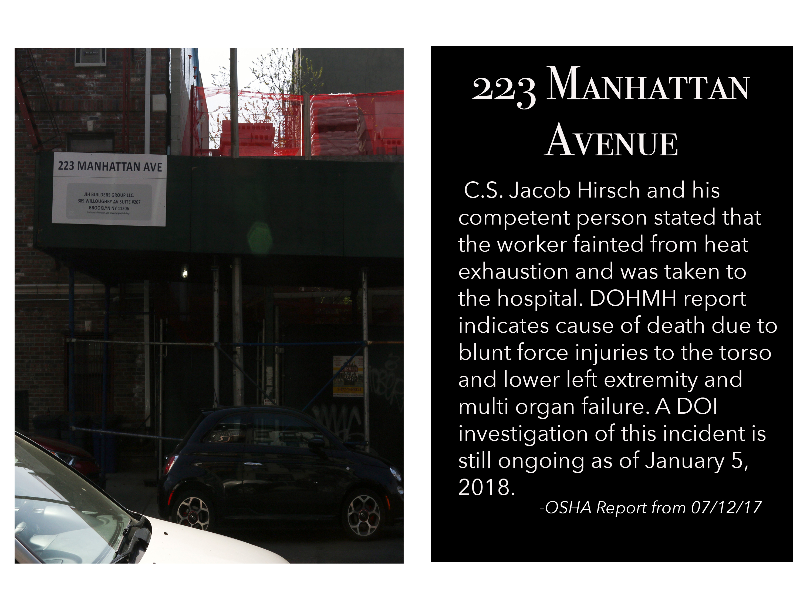
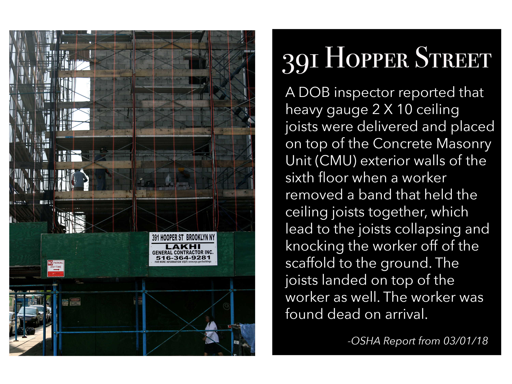
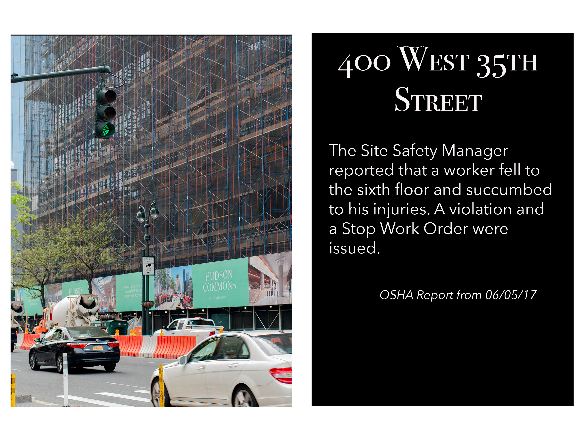
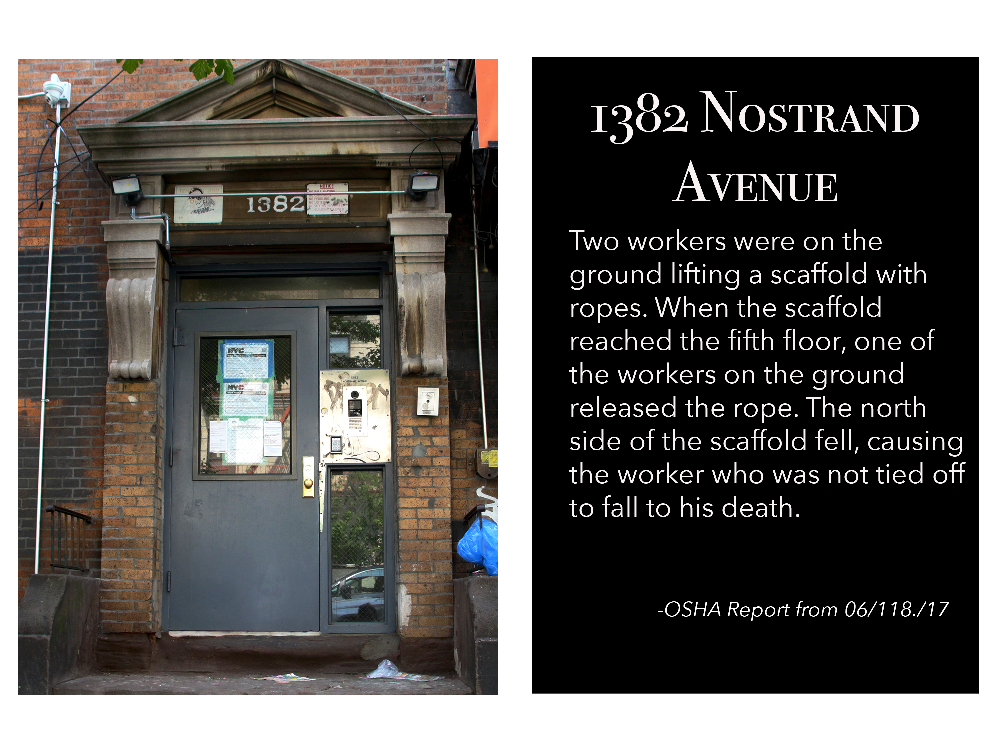
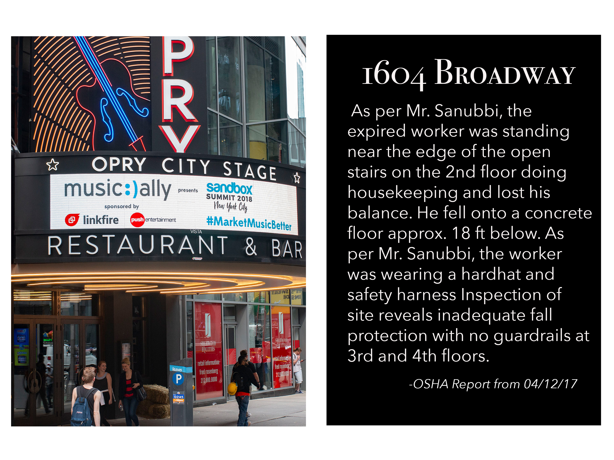
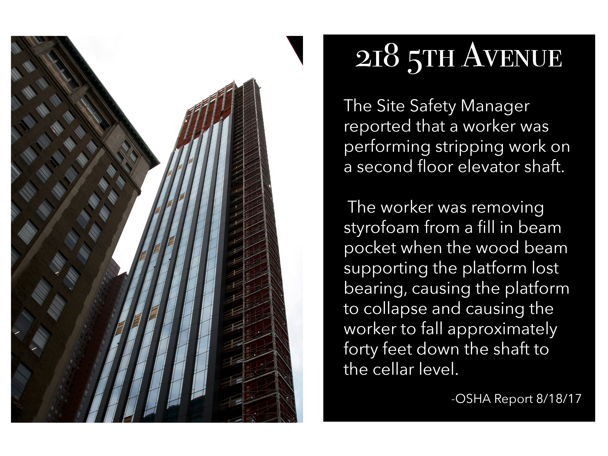
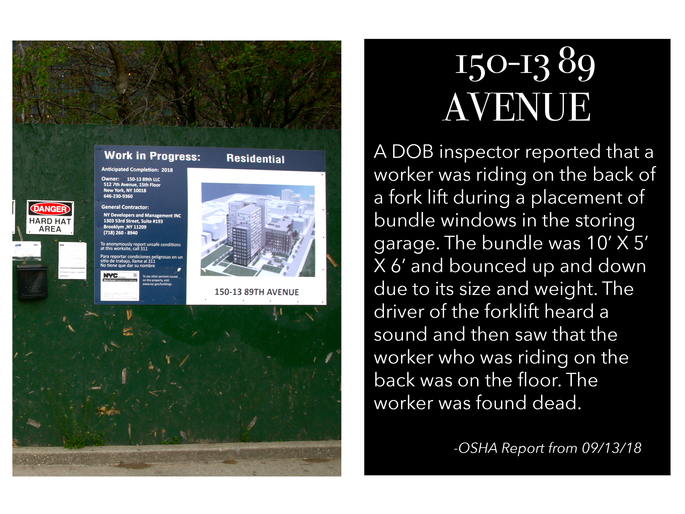

You see a lot — an empty hole in the ground. You erect a building. It’s going to be there after you’re dead and gone, your kids is dead and gone, your grandkids are dead and gone. But it’s a legacy, that you was a part of bringing this building that people are going to be living and working [in].– Carlos, Ironworker
Orange netting. Hunter green fences. In every borough and nearly every neighborhood of New York City, construction scaffolding is a familiar sight. Here, buildings are always in bloom. And as zoning laws change and development expands, gleaming new edifices seem to pop up overnight.
But Gotham doesn’t grow itself. Construction workers — carpenters, electricians, roofers, pipefitters, equipment operators, ironworkers — build the city upward. After their work ends and the scaffolds collapse, our streets and skylines are altered. We live, work and play within these creations.
This work is dangerous. According to the Federal Bureau of Labor Statistics, construction workers comprise only 5 percent of our city’s workforce, yet 27 percent of work-related fatalities. Although deaths have decreased in recent years, five construction workers died in the first three months of 2018.
These on-the-job deaths result in violations issued by the Department of Buildings and the Environmental Control Board, fines that are easily paid off to resume construction. As a result, any New Yorker can walk past a house, an apartment building, a shuttered construction site, and never know that a person died at that spot while on the job. Thanks to monthly DOB reports, these grim statistics are public if you know where to look.
As photographers, we tracked down these death sites to explore what it means to live in a city built through sacrifice. We visited every building where a construction worker perished between January 2017 and March 2018, photographing each unintended memorial.
The following images aren’t extraordinary, but that’s the point. Their repetitive ordinariness reminds us that our built environment carries a legacy, left behind by working New Yorkers.
    